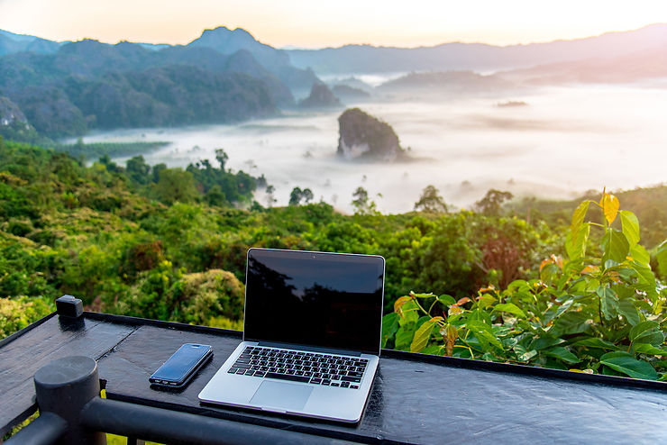

VISA
You don't get to be mom if you can't fix everything just right.

Location
Until you stalk and overrun, you can't devour anyone.

Galerie
There's never enough time to do all the nothing you want.

spot
There's never enough time to do all the nothing you want.

Envie d’un break loin de la France et sous le signe du bien-être ?
Bali est l’endroit idéal pour cela !
Il règne sur l’île une atmosphère apaisante, sans nul doute liée à la force de la spiritualité,
qui occupe une place prépondérante dans la vie des habitants, rythmée par les cérémonies. Au cœur de paysages dont l’harmonie semble être contagieuse,
on pratique le yoga et la méditation.
L’offre de retraites et de cures ayurvédiques, notamment est importante.
Partout, on succombe à la tentation des massages relaxants à l’huile,
mais on peut aussi opter pour un soin à visée thérapeutique,
comme ceux pratiqués par les guérisseurs traditionnels, en cas de souci de santé.
On l’aura compris, en plus de ses attraits culturels, Bali est une destination bien-être de premier plan.
Un atout de plus au compteur de l’île indonésienne !
Bali est l'une des îles les plus petites mais aussi les plus célèbres d'Indonésie.
Bali, l’« île des dieux », distille un charme et une beauté magnétiques.
Bali est est l’une des îles les plus petites de l’archipel indonésien,
mais de loin la plus convoitée par les touristes,
tandis que Lombok commence à pointer le bout de son nez.
Ce petit paradis rassemble tous les éléments indispensables à des vacances réussies.
De belles plages à Bali même si elles ne sont pas toutes baignables ,
des reliefs volcaniques extraordinaires habillés de forêts,
des collines où s’étagent des rizières dont les courbes font danser la lumière,
ainsi qu’une ferveur hindouiste omniprésente et toujours authentique.
Et puis les Balinais séduisent par leur douceur et leur étonnante gentillesse.
Qu’ils vivent au cœur des zones touristiques ou dans des hameaux isolés,
les Balinais n’ont perdu ni leur calme ni leurs coutumes.
Quel plaisir de les voir sacrifier, comme si rien d’autre n’importait,
au rituel quotidien des offrandes que l’on retrouve devant chaque boutique, sur les ponts,
au bord des rizières ou sur les autels ornant les jardins.
Peut-être est-ce cette présence constante du divin qui rend les Balinais si affables,
et leur permet de survivre au boom touristique sans complètement vendre leur âme…
Bali est l’endroit idéal pour cela !
Il règne sur l’île une atmosphère apaisante, sans nul doute liée à la force de la spiritualité,
qui occupe une place prépondérante dans la vie des habitants, rythmée par les cérémonies. Au cœur de paysages dont l’harmonie semble être contagieuse,
on pratique le yoga et la méditation.
L’offre de retraites et de cures ayurvédiques, notamment est importante.
Partout, on succombe à la tentation des massages relaxants à l’huile,
mais on peut aussi opter pour un soin à visée thérapeutique,
comme ceux pratiqués par les guérisseurs traditionnels, en cas de souci de santé.
On l’aura compris, en plus de ses attraits culturels, Bali est une destination bien-être de premier plan.
Un atout de plus au compteur de l’île indonésienne !
Bali est l'une des îles les plus petites mais aussi les plus célèbres d'Indonésie.
Bali, l’« île des dieux », distille un charme et une beauté magnétiques.
Bali est est l’une des îles les plus petites de l’archipel indonésien,
mais de loin la plus convoitée par les touristes,
tandis que Lombok commence à pointer le bout de son nez.
Ce petit paradis rassemble tous les éléments indispensables à des vacances réussies.
De belles plages à Bali même si elles ne sont pas toutes baignables ,
des reliefs volcaniques extraordinaires habillés de forêts,
des collines où s’étagent des rizières dont les courbes font danser la lumière,
ainsi qu’une ferveur hindouiste omniprésente et toujours authentique.
Et puis les Balinais séduisent par leur douceur et leur étonnante gentillesse.
Qu’ils vivent au cœur des zones touristiques ou dans des hameaux isolés,
les Balinais n’ont perdu ni leur calme ni leurs coutumes.
Quel plaisir de les voir sacrifier, comme si rien d’autre n’importait,
au rituel quotidien des offrandes que l’on retrouve devant chaque boutique, sur les ponts,
au bord des rizières ou sur les autels ornant les jardins.
Peut-être est-ce cette présence constante du divin qui rend les Balinais si affables,
et leur permet de survivre au boom touristique sans complètement vendre leur âme…
.jpg )
Bali info :
Bali est une île du Sud de l'Indonésie située entre les îles de Java et de Lombok. Elle fait partie des petites îles de la Sonde. Sa superficie est de 5 637 km2. La population de l'ensemble des îles de la province de Bali était de 4 317 404 habitants en 2020, soit une densité de 750 habitants/km2. Administrativement, l'île fait partie de la province du même nom et accueille sa capitale (ibu kota), Denpasar, dans le sud de l'île.
Climat:

Quels sont les métiers que peuvent exercer les digital nomads ?
Il existe 3 catégories de métiers en ligne que peuvent exercer les digital nomads.
Freelance :
aujourd'hui, il existe des centaines de métiers qu'on peut exercer en ligne de manière indépendante.
Entrepreneur à succès :
beaucoup d'entrepreneurs du web qui ont réussi à avoir une entreprise rentable se posent un jour la question suivante :
"et si je partais voyager quelques mois à l'étranger, tout en continuant à gérer mes activités ?
" Nouvelles rencontres, nouvelles opportunités d'affaires, ouverture de marché, apprentissage d'une nouvelle langue,
optimisation fiscale… Le fait d'être mobile et de partir vivre à l'étranger peut s'avérer très avantageux pour un entrepreneur du web.
Cela lui permet aussi de changer un peu de sa routine et de rajouter un peu d'aventure à sa carrière.
Télétravailleurs :
le nombre d'entreprises qui recrutent dans leurs rangs des digital nomads est encore marginal.
Ceci dit, cela se démocratise de plus en plus aux États-Unis, principalement dans la Silicon Valley.
Des entreprises comme Automatic, Buffer ou Todoist montrent l'exemple en embauchant des dizaines,
voire des centaines de digital nomads à travers le monde.
Être salarié dans ce genre d'entreprise permet en plus d'une liberté géographique, un épanouissement professionnel et personnel.
Cela permet aussi de profiter, dans certains pays, d'un meilleur climat, d'un meilleur niveau de vie,
ou d'un coût de la vie inférieur à celui des grandes métropoles occidentales.
Le fait de pouvoir voyager tout en travaillant permet également un apprentissage accru des langues étrangères.
Des entreprises comme Remotive.io se sont spécialisées dans le recrutement de digital nomads.
5 conseils importants pour les digital nomads :
En tant que digital nomad confirmé, j'aide chaque semaine de nouveaux travailleurs en ligne à franchir le pas.
Voici les 5 conseils les plus importants que je leur donne :
1.Ne faites pas le touriste toute l'année
Voyager comme un digital nomad n'est pas de tout repos. Il ne faut pas confondre les vacances et le fait de travailler à l'étranger,
dans des conditions extraordinaires (climat, ambiance, paysages, coût de la vie…).
Prenez des vacances régulièrement, bien entendu, mais ne faites pas le touriste toute l'année.
2. Prenez soin de votre environnement de travail :
L'environnement de travail est un des facteurs les plus importants pour être productif dans son activité.
Faites donc en sorte de choisir des hôtels ou des logements temporaires dans lesquelles vous pouvez travailler dans de bonnes conditions :
table ou bureau, espace, luminosité, connexion internet… Ayez également un ou 2 endroits à l'extérieur pour travailler (cafés, coworking space…).
3.Gérez correctement votre budget et vos revenu
En tant qu'entrepreneur ou freelance, vous allez très certainement avoir des revenus en « dents de scie ».
Parfois, les revenus sont très bons, parfois ils sont plus faibles.
Même si vous êtes à l'étranger et que vous avez envie de faire des excursions tous les jours, fixez-vous un budget et tenez-le.
4.Ne faites pas le tourdumondiste (prenez votre temps)
Préférez le voyage d'immersion que le voyage compulsif et tourdumondiste.
Pourquoi ne pas rester 3 mois dans un même pays pour apprendre une langue étrangère ?
Si vous changez de ville tous les 2-3 jours et que vous ne restez que quelques semaines dans chaque pays que vous visitez,
vous allez vous fatiguer et passer beaucoup trop de temps dans les transports.
Prenez votre temps et voyagez lentement.
5. Voyagez léger !
Ce conseil, tous les grands voyageurs vous le donneront. Il est encore plus pertinent de voyager léger quand on est digital nomad.
Car forcément, vous allez devoir, en plus de vos affaires personnelles, voyagez avec votre bureau mobile :
ordinateur portable, micro-casque pour les vidéo-conférences, cahier(s) de notes…
Faites-donc le choix du minimalisme et voyagez le plus léger possible.
Plus d’info en vidéo .
